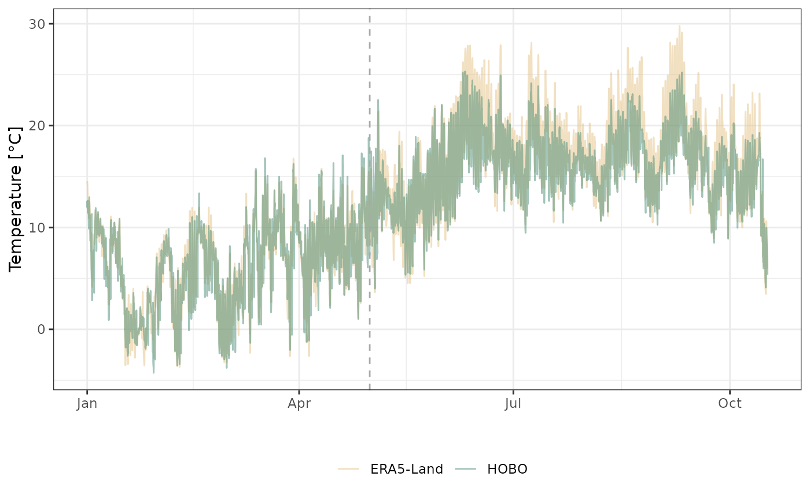
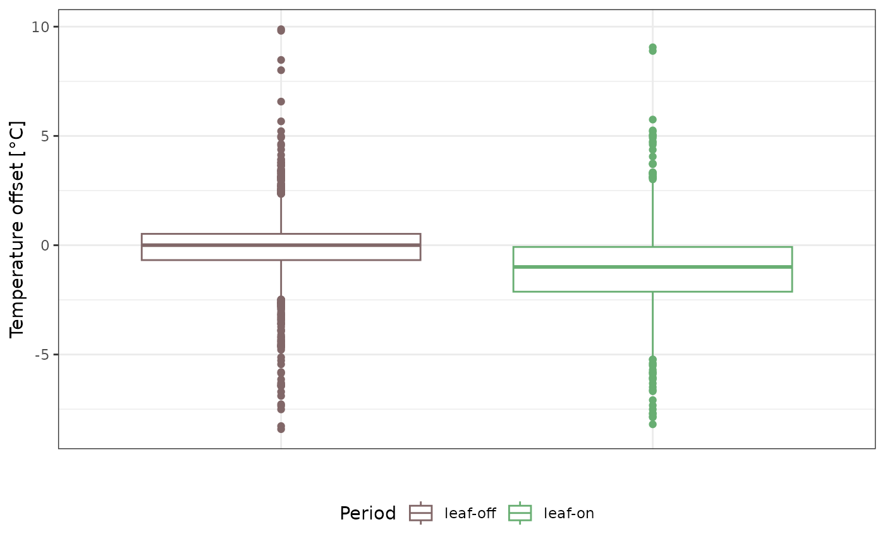
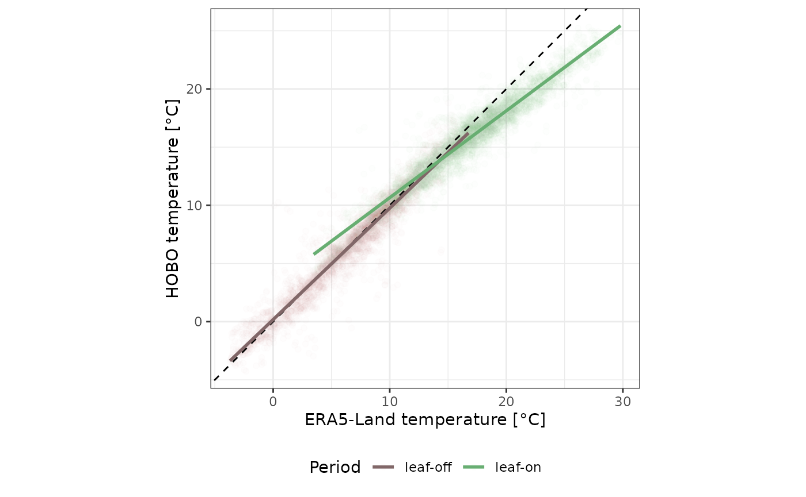
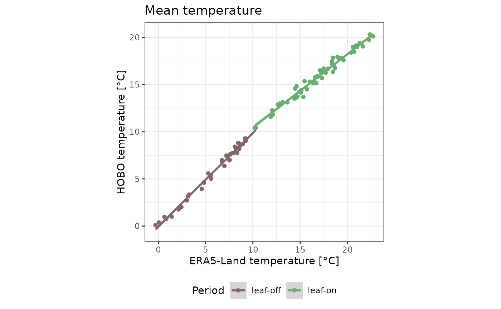
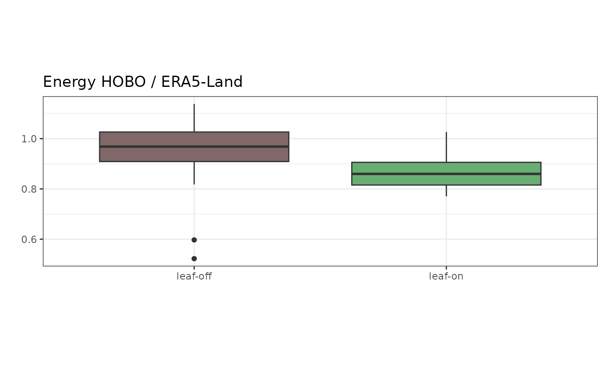
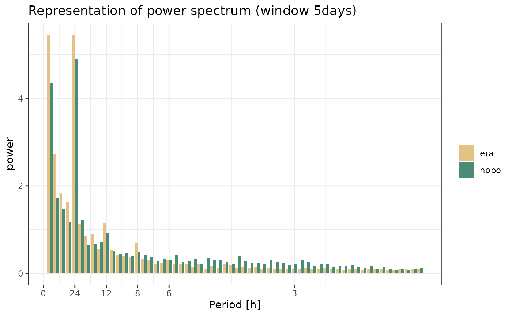
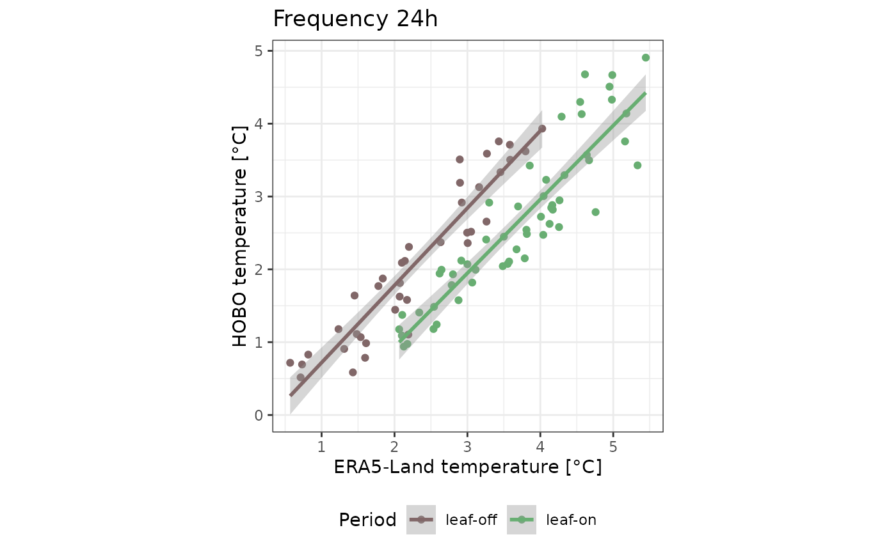
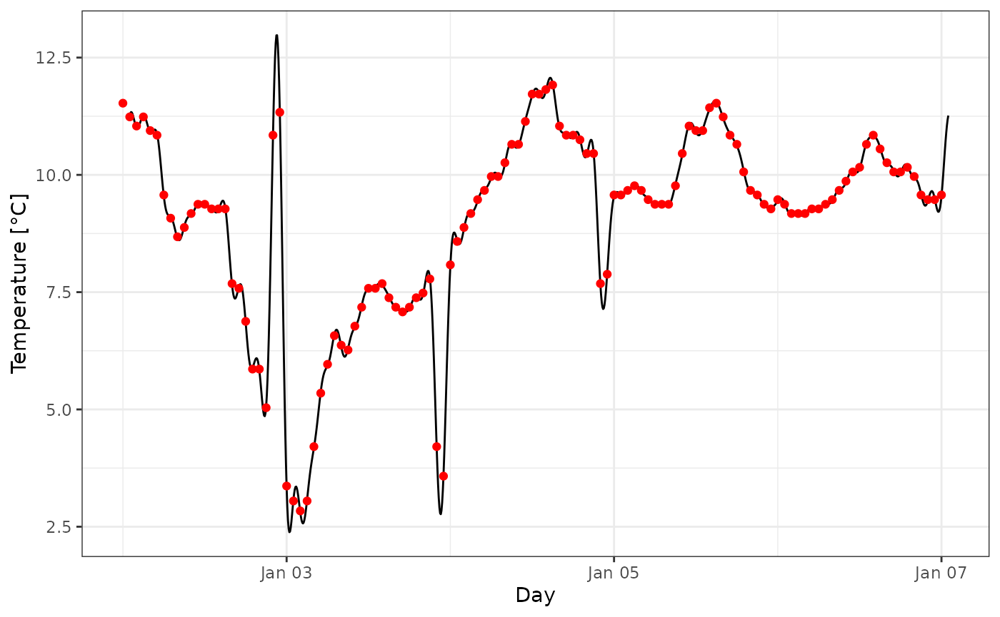

The example relies on microclimr for microclimate data
analyses, dplyr, tidyr and broom
for table manipulations, lubridate for dates wrangling, and
ggplot2 for graphic creations (a few will be replaced by
the package functions itself).
library(microclimr)
library(ggplot2)
library(dplyr)
library(tidyr)
library(lubridate)
library(broom)Data
Data are composed of air temperature at 1-m above the ground at every hour for the HOBO sensor “59-32-a” in 2023 within plot “59-32” from the Mormal forest joined by date and time with ERA5-Land temperature at 2m been extracted from the Google Earth Engine (GEE) for longitude 3.70 and latitude 50.2 corresponding to the Mormal forest.
data <- hobo |>
left_join(rename(era, datetime = time), by = join_by(datetime)) |>
mutate(season = ifelse(month_num %in% 5:11, "leaf-on", "leaf-off"))
data |>
ggplot(aes(x = datetime)) +
geom_line(aes(y = tas, col = "ERA5-Land"), alpha = .5) +
geom_line(aes(y = t_hobo, col = "HOBO"), alpha = .5) +
theme_bw() +
theme(legend.position = "bottom") +
ylab("Temperature [°C]") +
xlab("") +
scale_color_manual("", values = c("#e4c284", "#4a8b76")) +
geom_vline(
xintercept = as_datetime("2023-05-01 00:00:00"),
linetype = "dashed", col = "darkgrey"
)
Offset
A simple initial assessment of the microclimate effect can be made by computing the offset between the macro- and microclimatic temperatures by subtraction, as described in De Frenne et al. (2019). At Mormal, we observe a negligible mean offset during the leaf-off season, but a drop of approximately 1.1°C during the leaf-on season.
data |>
ggplot(aes(season, t_hobo - tas, col = season)) +
geom_boxplot() +
theme_bw() +
scale_color_manual("Period", values = c("#816768", "#68ae72")) +
ylab("Temperature offset [°C]") +
xlab("") +
theme(
axis.text.x = element_blank(), axis.ticks.x = element_blank(),
legend.position = "bottom"
)
| season | offset |
|---|---|
| leaf-off | -0.0859868 |
| leaf-on | -1.1111745 |
Slope and equilibrium
Another method, suggested by Gril et al. (2023), involves using a regression between macroclimatic and microclimatic temperature to compute the slope of the microclimate effect and the equilibrium temperature. This method is known as the slope and equilibrium approach. At Mormal, we observe a negligible slope effect during the leaf-off season, but during the leaf-on season, we observe a slope that reduces high temperature and increases low temperature in the understorey, with a value of 0.7 and an equilibrium point at 12.6°C.
data |>
ggplot(aes(tas, t_hobo, col = season)) +
geom_point(alpha = .01) +
geom_abline(linetype = "dashed") +
geom_smooth(method = "lm", se = FALSE) +
theme_bw() +
scale_color_manual("Period", values = c("#816768", "#68ae72")) +
xlab("ERA5-Land temperature [°C]") +
ylab("HOBO temperature [°C]") +
coord_equal() +
theme(legend.position = "bottom")
#> `geom_smooth()` using formula = 'y ~ x'
data |>
group_by(season) |>
do(fit = lm(t_hobo ~ tas, data = .)) |>
mutate(fit = list(tidy(fit))) |>
unnest() |>
mutate(term = recode(term,
"(Intercept)" = "intercept",
"tas" = "slope"
)) |>
select(season, term, estimate) |>
pivot_wider(names_from = "term", values_from = "estimate") |>
mutate(equilibrium = intercept / (1 - slope)) |>
select(season, slope, equilibrium) |>
knitr::kable()
#> Warning: `cols` is now required when using `unnest()`.
#> ℹ Please use `cols = c(fit)`.| season | slope | equilibrium |
|---|---|---|
| leaf-off | 0.9578547 | 4.205531 |
| leaf-on | 0.7467874 | 12.581538 |
Fourier Transform
The microclimr package proposes a new method based on
the Fourier transform. Short description [link to maths vignette].
First, we can quickly decompose the Fourier coefficients using a
window of five days sliding on three days by season (leaf-off or
leaf-on) and source of data (ERA macroclimate or HOBO microclimate), by
using the fft_roll function. This requires further
explanation.
fft_all <- data |>
select(season, datetime, tas, t_hobo) |>
rename(era = tas, hobo = t_hobo) |>
pivot_longer(era:hobo, names_to = "source", values_to = "temperature") |>
group_by(source, season) |>
do(fft = fft_roll(., 24 * 5, "datetime", "temperature")) |>
unnest(fft)Then, using the mean represented here by the 0 period, we can identify the linear relationship between mean temperatures.
fft_all |>
filter(period == 0) |>
select(season, source, datetime, power) |>
pivot_wider(names_from = source, values_from = power) |>
ggplot(aes(era, hobo, col = season)) +
geom_point() +
geom_smooth(method = "lm", formula = " y ~ x") +
theme_bw() +
scale_color_manual("Period", values = c("#816768", "#68ae72")) +
xlab("ERA5-Land temperature [°C]") +
ylab("HOBO temperature [°C]") +
coord_equal() +
theme(legend.position = "bottom") +
ggtitle("Mean temperature")
We can then calculate the energy of all the coefficients to determine the amount of energy dissipated during the leaf-on and leaf-off periods. This highlights the microclimate effect during the leaf-on season, with 87% of the energy remaining in the microclimate.
fft_all |>
group_by(source, season, datetime) |>
summarise(energy = fft_energy(fft_coefficient(amplitude, phase))) |>
pivot_wider(names_from = source, values_from = energy) |>
ggplot(aes(season, hobo / era, fill = season)) +
geom_boxplot() +
theme_bw() +
scale_fill_manual(guide = "none", values = c("#816768", "#68ae72")) +
ylab("") +
xlab("") +
coord_equal() +
theme(legend.position = "bottom") +
ggtitle("Energy HOBO / ERA5-Land")
#> `summarise()` has regrouped the output.
#> ℹ Summaries were computed grouped by source, season, and datetime.
#> ℹ Output is grouped by source and season.
#> ℹ Use `summarise(.groups = "drop_last")` to silence this message.
#> ℹ Use `summarise(.by = c(source, season, datetime))` for per-operation grouping
#> (`?dplyr::dplyr_by`) instead.
fft_all |>
group_by(source, season, datetime) |>
summarise(energy = fft_energy(fft_coefficient(amplitude, phase))) |>
pivot_wider(names_from = source, values_from = energy) |>
group_by(season) |>
summarise(dissipation = mean(hobo / era)) |>
knitr::kable()
#> `summarise()` has regrouped the output.
#> ℹ Summaries were computed grouped by source, season, and datetime.
#> ℹ Output is grouped by source and season.
#> ℹ Use `summarise(.groups = "drop_last")` to silence this message.
#> ℹ Use `summarise(.by = c(source, season, datetime))` for per-operation grouping
#> (`?dplyr::dplyr_by`) instead.| season | dissipation |
|---|---|
| leaf-off | 0.9526486 |
| leaf-on | 0.8714314 |
Additional Fourier analyses
We can also represent the power spectrum of both the macro- and microlimates after applying the Fourier transform (a graphical function to be added).
fft_all |>
filter(season == "leaf-on") |>
group_by(source) |>
filter(period != 0) |>
ggplot(aes(frequency, power, fill = source)) +
geom_col(position = "dodge") +
theme_bw() +
ggtitle("Representation of power spectrum (window 5days)") +
xlab("Period [h]") +
scale_x_continuous(
breaks = c(0, 1 / 24, 1 / 12, 1 / 8, 1 / 6, 1 / 3),
labels = c("0", "24", "12", "8", "6", "3")
) +
scale_fill_manual("", values = c("#e4c284", "#4a8b76")) +
theme(legend.position.inside = c(0.8, 0.8))
We can also represent the temperature amplitude relation for a specific frequency, such as the 24-hour period shown here (graphical function to be added?).
fft_all |>
filter(period == 24) |>
select(season, source, datetime, power) |>
pivot_wider(names_from = source, values_from = power) |>
ggplot(aes(era, hobo, col = season)) +
geom_point() +
geom_smooth(method = "lm", formula = " y ~ x") +
theme_bw() +
scale_color_manual("Period", values = c("#816768", "#68ae72")) +
xlab("ERA5-Land temperature [°C]") +
ylab("HOBO temperature [°C]") +
coord_equal() +
theme(legend.position = "bottom") +
ggtitle("Frequency 24h")
Reconstruction
The power spectrum can also be used to reconstruct time series with a
finer time step. For example, this can be achieved using the
fft_reconstruct function (to be used for macroclimate
debiasing).
sub <- filter(
fft_all, source == "hobo",
datetime == as_datetime("2023-01-04 12:30:00")
)
tibble(time = seq(0, 24 * 5, by = 0.1)) |>
mutate(temperature = fft_reconstruct(
coefficients = fft_coefficient(sub$amplitude, sub$phase),
frequencies = sub$frequency[-1],
time = time
)) |>
ggplot(aes(
as_datetime(as_date("2023-01-04") - 2 + (time + 1) / 24),
temperature
)) +
geom_line() +
theme_bw() +
ylab("Temperature [°C]") +
xlab("Day") +
geom_point(
data = filter(
data,
datetime >= as_date("2023-01-02"),
datetime <= as_date("2023-01-07")
),
aes(x = datetime, y = t_hobo), col = "red"
)
References
De Frenne, P., Zellweger, F., Rodríguez-Sánchez, F. et al. Global buffering of temperatures under forest canopies. Nat Ecol Evol 3, 744–749 (2019). https://doi.org/10.1038/s41559-019-0842-1
Gril, E., Spicher, F., Greiser, C., Ashcroft, M. B., Pincebourde, S., Durrieu, S., … & Lenoir, J. (2023). Slope and equilibrium: A parsimonious and flexible approach to model microclimate. Methods in Ecology and Evolution, 14(3), 885-897. https://doi.org/10.1111/2041-210X.14048